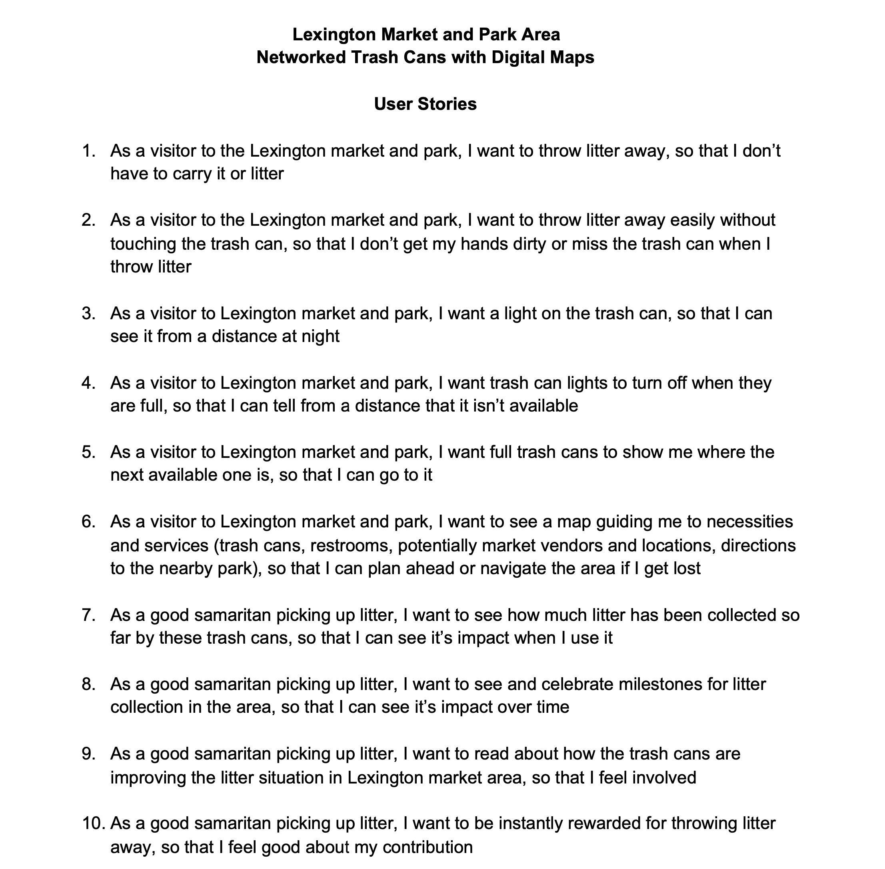
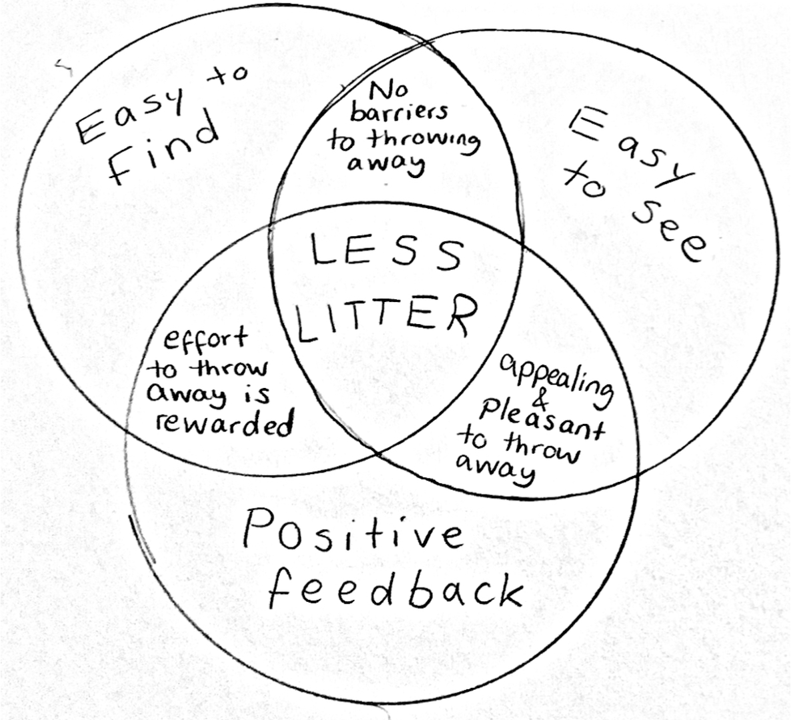
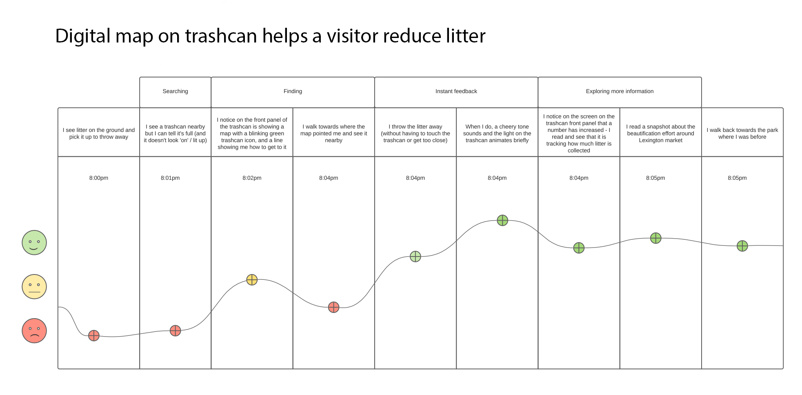
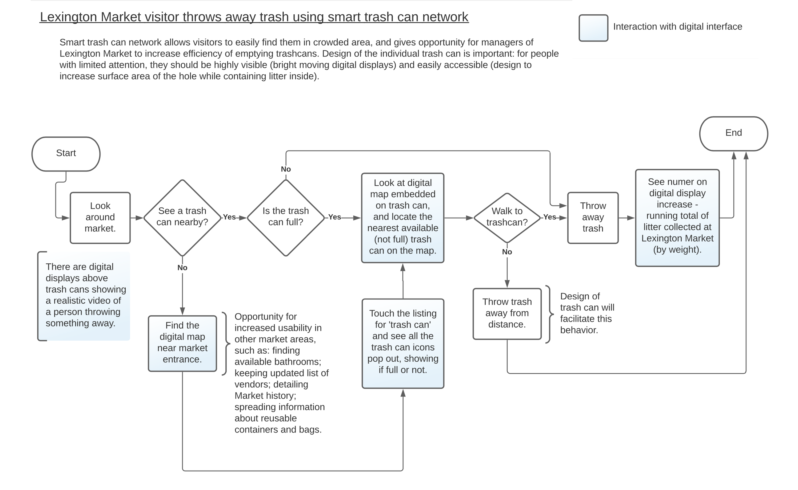

Project to design a creative solution for littering around Baltimore's Lexington Market and park
Market Center Merchants Association and the Bromo Arts District of Baltimore are located in similar areas of the city; MCMA supports Baltimore area commerce and business, and the Bromo Arts District supports and advances the work of artists and cultural organizations. They came together to seek out creative solutions for litter prevention around the new park 'The Meadow', which is near Lexington Market. This was a fun creative project where I took the opportunity to practice generative research and visualization methods (flow diagrams, storyboards, user stories, etc). I delivered my concept as an animated storyboard, intended to represent the quirky artistic side to Baltimore and bring the design to life in the context of Lexington Market and The Meadow.
Challenge
Deliver a creative concept to deal with the litter struggle around Lexington Market and the nearby park The Meadow. Since this was in collaboration with a class in my graduate program, I was also asked to incorporate technology in my design and to think outside the box instead of limiting my ideas to those that would be financially feasible.
Methodology
- User stories
- Data visualization
- Animated storyboard
Generative research
MCMA provided helpful data and pictures of the park. I was also able to find litter-related data from government websites. From this data and the organization's goals, I listed user stories to generate litter solution ideas. I concentrated the underlying issues into a venn diagram to refer back to while creating the end concept. These exercises resulted in the concept of a network of trashcans that would communicate their 'full' status and display maps to show visitors where the nearest usable trashcan is located. They would also be capable of displaying litter prevention messaging to remind folks as they are walking around to use the cans.


Evaluation

A journey map exploring emotions of visitors using the trashcans. I wanted to build in a way to engage visitors, and this helped point out opportune moments, such as a thank you message after throwing something away and displaying facts and figures about amount of litter saved.
The flow diagram was beneficial in working out the technical details and enabled delivering this information in an easy-to-digest way.
Rapid prototyping
The creative element of what the product looked like and how it really worked from teh perspective of the user was completed over a short period of time. Drawing a storyboard comic was an effective way to rapidly adjust appearance and details in the moment. When I was satisfied with the overall concept I made a short animated storyboard to bring it to life. This was intended to instill a quirky vibe representative of the artsy side of Baltimore, and to respond to the creativity prompt from the Bromo Arts District. I used what I had on hand in my apartment and made the video in less than a day, purposefully keeping it lighthearted and technically raw - I wanted to showcase the creative concept as opposed to a finished design of a product.
Project reflections
This was a small creative concept project which was a lot of fun to make. The visualizations brought it to life while detailing the technical aspects in a clear and understandable way. The biggest hurdle at the beginning was the technology requirement - I was aware this would likely not be funded due to the high cost of development, installation, and maintenance. However, I hope it inspired simpler and more feasible ideas at the organizations. There are many litter prevention solutions out there that don't require technology and that are cheap and effective - since this was also a project in a graduate program class I had to meet certain requirements beyond feasability. If I were to partner with MCMA and Bromo Arts District again, I would ask for more details about funding and access to materials to make sure the design could be implemented in the end.